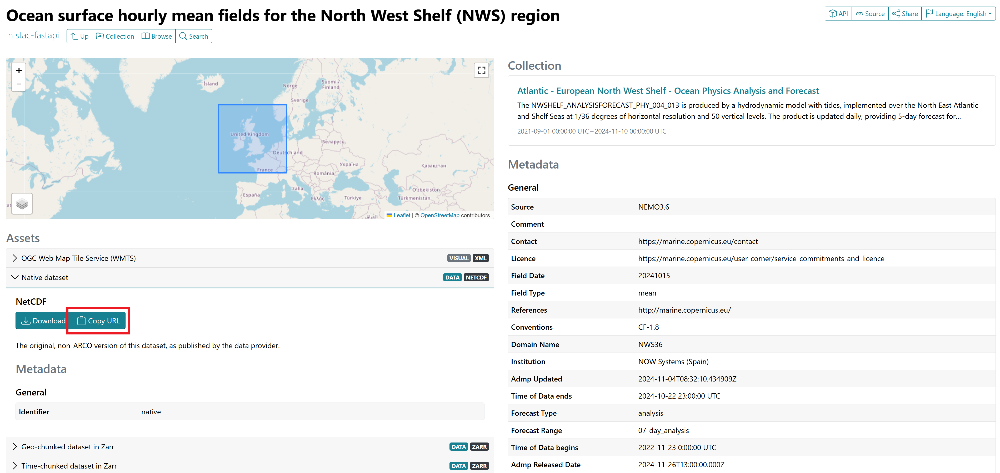

Create a Reference Model with virtualizarr
In this tutorial, we illustrate how to assemble a reference model from .nc files located in a remote S3 bucket.
We will use the library virtualizarr, which allows us to conveniently concatenate and save the final dataset in the parquet format without loading in memory the data (with a function called openvirtual_dataset()).
Here a summary of the main steps for building a reference model:
Identify where the raw data of your reference is stored.
Copy the data to the (
S3) bucket.Unify the data to a single dataset and store it locally to a
parq/folder (i.e.,parquetformat).Optionally, upload the dataset on the remote bucket to share the model.
We will illustrate this guide with an example using the Ocean Physics Analysis and Forecast model for the European North West Shelf.
We will assemble the following data from 2022 to 2023:
Sea surface height above geoid SSH (variable
zos).Sea Water Potential Temperature (variable
thetao).Bathymetry (sea bottom depth, variable
deptho).Sea-land mask (variable
mask).
1.a. Find the raw data
First, we need to find where the raw data of the targeted reference model is stored.
Once you have identified the model you want to use, use this web page to find the url of the data. Enter/Search for the name of your model in the input ‘’Collections’’. Once you’ve submitted your search, different data will be listed, along with their respective time intervals. In our case, we look for the hourly mean fields (and the additional static data bathymetry and land-sea mask), which are located here:
We suggest using the native data, whose url can be copy-pasted under the panel ‘’Native dataset’’ in the ‘’Assets’’ section (see screenshot below). 
Note: if you don’t work remotely, feel free to download the files locally! For our illustration though, we assume otherwise.
1.b. Fetch the data
We fetch the data with rclone. Ensure that you have the adequate credentials (check the file ~/.config/rclone/rclone.conf with cat)*.
*For GFTS users, it should be done automatically during your onboarding.
Adapt and execute the following command:
rclone copy cmarine:SRC_URL gfts:DEST_URL
Where SRC_URL is the url copy-pasted earlier and DEST_URL the path where you want to store the data on the GFTS bucket, for each url.
In our example, it corresponds to:
rclone copy cmarine:mdl-native-13/native/NWSHELF_ANALYSISFORECAST_PHY_004_013/cmems_mod_nws_phy_anfc_0.027deg-2D_PT1H-m_202411 gfts:gfts-reference-data/demo/NWSHELF_ANALYSISFORECAST_PHY_004_013/
rclone copy cmarine:mdl-native-13/native/NWSHELF_ANALYSISFORECAST_PHY_004_013/cmems_mod_nws_phy_anfc_0.027deg-3D_PT1H-m_202309 gfts:gfts-reference-data/demo/NWSHELF_ANALYSISFORECAST_PHY_004_013/
rclone copy cmarine:mdl-native-13/native/NWSHELF_ANALYSISFORECAST_PHY_004_013/cmems_mod_nws_phy_anfc_0.027deg-3D_static_202411/NWS-MFC_004_013_mask_bathy.nc gfts:gfts-reference-data/demo/NWSHELF_ANALYSISFORECAST_PHY_004_013/
2. Assembling The Model
Preliminaries
The idea is simple, and consists in those steps for each path/data source:
Open virtually (i.e., without loading data in memory) all the
.ncfiles.Depending on your application, post-process the datasets (e.g., dropping or renaming variables or coordinates).
Concatenate them along time.
Then, we merge all the concatenated data and store the resulting dataset with kerchunk in the parquet format (usually, under a *.parq/ folder).
Below, we first present how to setup the notebook (installing the package, defining different variables etc.). Next, we show how to generally perform the steps above. Finally, we implement them to our example.
Setup
As mentioned earlier, we rely on the virtualizarr library and its function open_virtual_dataset for opening the remote datasets.
First, install virtualizarr with pip and import the function open_virtual_dataset:
!pip install virtualizarr
Requirement already satisfied: virtualizarr in /srv/conda/envs/notebook/lib/python3.12/site-packages (1.2.0)
Requirement already satisfied: xarray>=2024.10.0 in /srv/conda/envs/notebook/lib/python3.12/site-packages (from virtualizarr) (2024.11.0)
Requirement already satisfied: numpy>=2.0.0 in /srv/conda/envs/notebook/lib/python3.12/site-packages (from virtualizarr) (2.1.3)
Requirement already satisfied: packaging in /srv/conda/envs/notebook/lib/python3.12/site-packages (from virtualizarr) (24.1)
Requirement already satisfied: universal-pathlib in /srv/conda/envs/notebook/lib/python3.12/site-packages (from virtualizarr) (0.2.5)
Requirement already satisfied: numcodecs in /srv/conda/envs/notebook/lib/python3.12/site-packages (from virtualizarr) (0.12.1)
Requirement already satisfied: ujson in /srv/conda/envs/notebook/lib/python3.12/site-packages (from virtualizarr) (5.10.0)
Requirement already satisfied: pandas>=2.1 in /srv/conda/envs/notebook/lib/python3.12/site-packages (from xarray>=2024.10.0->virtualizarr) (2.2.2)
Requirement already satisfied: fsspec!=2024.3.1,>=2022.1.0 in /srv/conda/envs/notebook/lib/python3.12/site-packages (from universal-pathlib->virtualizarr) (2024.6.1)
Requirement already satisfied: python-dateutil>=2.8.2 in /srv/conda/envs/notebook/lib/python3.12/site-packages (from pandas>=2.1->xarray>=2024.10.0->virtualizarr) (2.8.2)
Requirement already satisfied: pytz>=2020.1 in /srv/conda/envs/notebook/lib/python3.12/site-packages (from pandas>=2.1->xarray>=2024.10.0->virtualizarr) (2024.1)
Requirement already satisfied: tzdata>=2022.7 in /srv/conda/envs/notebook/lib/python3.12/site-packages (from pandas>=2.1->xarray>=2024.10.0->virtualizarr) (2024.1)
Requirement already satisfied: six>=1.5 in /srv/conda/envs/notebook/lib/python3.12/site-packages (from python-dateutil>=2.8.2->pandas>=2.1->xarray>=2024.10.0->virtualizarr) (1.16.0)
Import the open_virtual_dataset function and configure the remote access to the S3 bucket.
from virtualizarr import open_virtual_dataset
import s3fs
import xarray as xr
s3 = s3fs.S3FileSystem(
anon=False,
profile="gfts",
client_kwargs={
"endpoint_url": "https://s3.gra.perf.cloud.ovh.net",
"region_name": "gra",
},
)
storage_options = {
"anon": False,
"client_kwargs": {
"endpoint_url": "https://s3.gra.perf.cloud.ovh.net/",
"region_name": "gra",
},
} # for opening remote virtual dataset with virtualizarr
How-to General Procedure
Open virtually the .nc files given a remote root folder
root = "path_of_your_data_on_s3/" # update w.r.t your use case
s3path = f"{root}*.nc" # update w.r.t your use case
remote_files = sorted(s3.glob(s3path)) # remind to sort (time-wise) the files!
virtual_datasets = [
open_virtual_dataset(
"s3://" + filepath,
reader_options={"storage_options": storage_options},
indexes={}, # we will concatenate the datasets along time later
decode_times=True,
# indicate here the variables/coords you want to load in memory
# by doing so they will be **saved** in the final `.parq/` folder
loadable_variables=["depth", "longitude", "latitude"]
)
for filepath in remote_files
]
Concatenating the vds along time
vds = xr.concat(virtual_datasets, dim="time", compat="override", coords="minimal", data_vars="minimal", combine_attrs="drop_conflicts")
Repeat the procedure for each root path (or data source).
Now, assuming you end up with, for instance, vds1 and vds2, here how to merge them before saving the result:
import xarray as xr
merged_vds = xr.merge([vds1, vds2])
merged_vds.virtualize.to_kerchunk("output.parq", format="parquet") # update w.r.t your application
NB: if you only have a source (i.e., a single vds), skip the mergging step and directly run vds.virtualize.to_kerchunk("output.parq", format="parquet").
Speeding up the computation with dask
The opening of the remote files can be speeded up with dask as follows:
Creates a local cluster
from distributed import LocalCluster
import dask
cluster = LocalCluster()
client = cluster.get_client()
client
Then, embed the calls to open_virtual_dataset with dask.delayed(...) and lunch the computation with dask.compute().
...
virtual_datasets = [
dask.delayed(open_virtual_dataset)(
"s3://" + filepath,
...
)
for filepath in remote_files
]
vds = dask.compute(*virtual_datasets)
...
Not only it speeds up the computation, but it also lets you follow the progression (something very helpful if there are a lot of .nc files to read).
Application: Example
We finish this how-to guide by implementing the procedure above to our example.
Let’s first define variables to store the root paths of each data source:
# data sources
root = "gfts-reference-data/demo/NORTHWESTSHELF_ANALYSIS_FORECAST_PHY_004_013/"
static_root = root + "cmems_mod_nws_phy_anfc_0.027deg-3D_static_202411/"
ssh_root = root + "cmems_mod_nws_phy_anfc_0.027deg-2D_PT1H-m_202411/"
temp_root = root + "cmems_mod_nws_phy_anfc_0.027deg-3D_PT1H-m_202309/"
# creates a cluster to speed up the computation
from distributed import LocalCluster
import dask
cluster = LocalCluster()
client = cluster.get_client()
client
/srv/conda/envs/notebook/lib/python3.12/site-packages/distributed/node.py:182: UserWarning: Port 8787 is already in use.
Perhaps you already have a cluster running?
Hosting the HTTP server on port 35019 instead
warnings.warn(
/srv/conda/envs/notebook/lib/python3.12/site-packages/distributed/client.py:1617: VersionMismatchWarning: Mismatched versions found
+---------+--------+-----------+---------+
| Package | Client | Scheduler | Workers |
+---------+--------+-----------+---------+
| numpy | 2.1.3 | 2.1.3 | 2.0.2 |
+---------+--------+-----------+---------+
warnings.warn(version_module.VersionMismatchWarning(msg[0]["warning"]))
Client
Client-279661ab-b3dd-11ef-8176-b2230698acfe
| Connection method: Cluster object | Cluster type: distributed.LocalCluster |
| Dashboard: http://127.0.0.1:35019/status |
Cluster Info
LocalCluster
598810e8
| Dashboard: http://127.0.0.1:35019/status | Workers: 3 |
| Total threads: 6 | Total memory: 24.00 GiB |
| Status: running | Using processes: True |
Scheduler Info
Scheduler
Scheduler-6ffe4645-5234-4037-9c54-67cec1ff25a4
| Comm: tcp://127.0.0.1:36717 | Workers: 3 |
| Dashboard: http://127.0.0.1:35019/status | Total threads: 6 |
| Started: Just now | Total memory: 24.00 GiB |
Workers
Worker: 0
| Comm: tcp://127.0.0.1:44673 | Total threads: 2 |
| Dashboard: http://127.0.0.1:44217/status | Memory: 8.00 GiB |
| Nanny: tcp://127.0.0.1:37825 | |
| Local directory: /tmp/dask-scratch-space/worker-5tqqw777 | |
Worker: 1
| Comm: tcp://127.0.0.1:45655 | Total threads: 2 |
| Dashboard: http://127.0.0.1:45185/status | Memory: 8.00 GiB |
| Nanny: tcp://127.0.0.1:43869 | |
| Local directory: /tmp/dask-scratch-space/worker-fptob1pn | |
Worker: 2
| Comm: tcp://127.0.0.1:37051 | Total threads: 2 |
| Dashboard: http://127.0.0.1:43085/status | Memory: 8.00 GiB |
| Nanny: tcp://127.0.0.1:35887 | |
| Local directory: /tmp/dask-scratch-space/worker-p4ogs8b5 | |
Static data (mask and deptho)
# locates the `.nc` file
s3path = f"{static_root}*_mask_bathy.nc"
remote_files = s3.glob(s3path)
assert len(remote_files) == 1
print(f"found {len(remote_files)} .nc files.")
print(remote_files)
found 1 .nc files.
['gfts-reference-data/NORTHWESTSHELF_ANALYSIS_FORECAST_PHY_004_013/MetO-NWS-PHY-001-013-STATIC_202112/NWS-MFC_004_013_mask_bathy.nc']
# opens the virtual dataset while dropping unused variables
vds = (
open_virtual_dataset(
"s3://" + remote_files[0],
reader_options={"storage_options": storage_options},
indexes={},
decode_times=True,
loadable_variables=["depth", "longitude", "latitude"],
)
.drop_vars(["lat", "lon", "deptho_lev_interp"])
.rename_dims({"latitude": "lat", "longitude": "lon"})
)
vds
<xarray.Dataset> Size: 162MB
Dimensions: (lat: 1240, lon: 958, depth: 33)
Coordinates:
* depth (depth) float32 132B 0.0 3.0 5.0 10.0 ... 2e+03 3e+03 4e+03 5e+03
* latitude (lat) float32 5kB 46.0 46.01 46.03 46.04 ... 62.72 62.73 62.74
* longitude (lon) float32 4kB -16.0 -15.97 -15.94 -15.91 ... 12.94 12.97 13.0
Dimensions without coordinates: lat, lon
Data variables:
deptho (lat, lon) float32 5MB ManifestArray<shape=(1240, 958), dtype=...
mask (depth, lat, lon) float32 157MB ManifestArray<shape=(33, 1240,...
Attributes:
Conventions: CF-1.7
contact: servicedesk.cmems@mercator-ocean.eu
creation_date: 2021-10-26T06:41:01Z
credit: E.U. Copernicus Marine Service Information (CMEMS)
forcing_data_source: ECMWF Global Atmospheric Model (HRES); UKMO NATL12;...
history: See source and creation_date attributes
institution: UK Met Office
licence: http://marine.copernicus.eu/services-portfolio/serv...
netcdf-version-id: netCDF-4
product: NORTHWESTSHELF_ANALYSIS_FORECAST_PHY_004_013
references: http://marine.copernicus.eu/
source: PS-OS 44, AMM-FOAM 1.5 km (tidal) NEMO v3.6_WAVEWAT...Explanations:
We want to work with
latandloncoordinates. However, no all the datasets use the same names (longitudevslon). So, along withdeptho_lev_interp, we removelatandlon(if any) and then renamelatitudeandlongitudetolatandlon, respectively.
static_vds = vds.rename({"latitude": "lat", "longitude": "lon"})
static_vds
/tmp/ipykernel_374/3887474104.py:1: UserWarning: rename 'latitude' to 'lat' does not create an index anymore. Try using swap_dims instead or use set_index after rename to create an indexed coordinate.
static_vds = vds.rename({"latitude": "lat", "longitude": "lon"})
/tmp/ipykernel_374/3887474104.py:1: UserWarning: rename 'longitude' to 'lon' does not create an index anymore. Try using swap_dims instead or use set_index after rename to create an indexed coordinate.
static_vds = vds.rename({"latitude": "lat", "longitude": "lon"})
<xarray.Dataset> Size: 162MB
Dimensions: (lat: 1240, lon: 958, depth: 33)
Coordinates:
* depth (depth) float32 132B 0.0 3.0 5.0 10.0 ... 2e+03 3e+03 4e+03 5e+03
* lat (lat) float32 5kB 46.0 46.01 46.03 46.04 ... 62.7 62.72 62.73 62.74
* lon (lon) float32 4kB -16.0 -15.97 -15.94 -15.91 ... 12.94 12.97 13.0
Data variables:
deptho (lat, lon) float32 5MB ManifestArray<shape=(1240, 958), dtype=fl...
mask (depth, lat, lon) float32 157MB ManifestArray<shape=(33, 1240, 9...
Attributes:
Conventions: CF-1.7
contact: servicedesk.cmems@mercator-ocean.eu
creation_date: 2021-10-26T06:41:01Z
credit: E.U. Copernicus Marine Service Information (CMEMS)
forcing_data_source: ECMWF Global Atmospheric Model (HRES); UKMO NATL12;...
history: See source and creation_date attributes
institution: UK Met Office
licence: http://marine.copernicus.eu/services-portfolio/serv...
netcdf-version-id: netCDF-4
product: NORTHWESTSHELF_ANALYSIS_FORECAST_PHY_004_013
references: http://marine.copernicus.eu/
source: PS-OS 44, AMM-FOAM 1.5 km (tidal) NEMO v3.6_WAVEWAT...Sea Surface Height (zos)
remote_files = sorted(
s3.glob(f"{ssh_root}2022/*/*.nc") + s3.glob(f"{ssh_root}2023/*/*.nc")
)
print(f"found {len(remote_files)} .nc files.")
found 743 .nc files.
zos_virtual_datasets = [
dask.delayed(open_virtual_dataset)(
"s3://" + filepath,
reader_options={"storage_options": storage_options},
indexes={},
decode_times=True,
loadable_variables=["time", "lat", "lon"],
)
for filepath in remote_files
]
zvds = dask.compute(*zos_virtual_datasets)
zos_vds = xr.concat(
zvds,
dim="time",
compat="override",
coords="minimal",
data_vars="minimal",
combine_attrs="drop_conflicts",
)
zos_vds
<xarray.Dataset> Size: 42GB
Dimensions: (time: 17832, lat: 1240, lon: 958)
Coordinates:
* time (time) datetime64[ns] 143kB 2022-01-01T01:00:00 ... 2024-01-14
* lat (lat) float32 5kB 46.0 46.01 46.03 46.04 ... 62.7 62.72 62.73 62.74
* lon (lon) float32 4kB -16.0 -15.97 -15.94 -15.91 ... 12.94 12.97 13.0
Data variables:
zos (time, lat, lon) int16 42GB ManifestArray<shape=(17832, 1240, 95...
Attributes:
Conventions: CF-1.7
contact: servicedesk.cmems@mercator-ocean.eu
credit: E.U. Copernicus Marine Service Information (CMEMS)
forcing_data_source: ECMWF Global Atmospheric Model (HRES); CMEMS-MERCAT...
history: See source and creation_date attributes
institution: UK Met Office
licence: http://marine.copernicus.eu/services-portfolio/serv...
netcdf-version-id: netCDF-4
product: NORTHWESTSHELF_ANALYSIS_FORECAST_PHY_004_013
references: http://marine.copernicus.eu/
source: PS-OS 45, AMM-FOAM 1.5 km (tidal) NEMO v3.6_WAVEWAT...
title: hourly-instantaneous SSH (2D)Sea Water Potential Temperature (thetao)
thetao_virtual_datasets = [
dask.delayed(open_virtual_dataset)(
"s3://" + filepath,
reader_options={"storage_options": storage_options},
indexes={},
decode_times=True,
loadable_variables=[
"time",
"lat",
"lon",
"depth",
], # note that we also load (and thus save) the depths
)
for filepath in sorted(
s3.glob(f"{temp_root}2022/*/*.nc") + s3.glob(f"{temp_root}2023/*/*.nc")
)
]
tvds = dask.compute(*thetao_virtual_datasets)
thetao_vds = xr.concat(
tvds,
dim="time",
compat="override",
coords="minimal",
data_vars="minimal",
combine_attrs="drop_conflicts",
)
thetao_vds
<xarray.Dataset> Size: 1TB
Dimensions: (time: 17832, depth: 33, lat: 1240, lon: 958)
Coordinates:
* time (time) datetime64[ns] 143kB 2022-01-01T01:00:00 ... 2024-01-14
* lat (lat) float32 5kB 46.0 46.01 46.03 46.04 ... 62.7 62.72 62.73 62.74
* lon (lon) float32 4kB -16.0 -15.97 -15.94 -15.91 ... 12.94 12.97 13.0
* depth (depth) float32 132B 0.0 3.0 5.0 10.0 ... 2e+03 3e+03 4e+03 5e+03
Data variables:
thetao (time, depth, lat, lon) int16 1TB ManifestArray<shape=(17832, 33...
Attributes:
Conventions: CF-1.7
contact: servicedesk.cmems@mercator-ocean.eu
credit: E.U. Copernicus Marine Service Information (CMEMS)
forcing_data_source: ECMWF Global Atmospheric Model (HRES); CMEMS-MERCAT...
history: See source and creation_date attributes
institution: UK Met Office
licence: http://marine.copernicus.eu/services-portfolio/serv...
netcdf-version-id: netCDF-4
product: NORTHWESTSHELF_ANALYSIS_FORECAST_PHY_004_013
references: http://marine.copernicus.eu/
source: PS-OS 45, AMM-FOAM 1.5 km (tidal) NEMO v3.6_WAVEWAT...
title: hourly-instantaneous potential temperature (3D)Merging the three data sources
merged_vds = xr.merge([static_vds, zos_vds, thetao_vds])
merged_vds.virtualize.to_kerchunk("combined_final.parq", format="parquet")
merged_vds
<xarray.Dataset> Size: 1TB
Dimensions: (lat: 1240, lon: 958, depth: 33, time: 17832)
Coordinates:
* depth (depth) float32 132B 0.0 3.0 5.0 10.0 ... 2e+03 3e+03 4e+03 5e+03
* lat (lat) float32 5kB 46.0 46.01 46.03 46.04 ... 62.7 62.72 62.73 62.74
* lon (lon) float32 4kB -16.0 -15.97 -15.94 -15.91 ... 12.94 12.97 13.0
* time (time) datetime64[ns] 143kB 2022-01-01T01:00:00 ... 2024-01-14
Data variables:
deptho (lat, lon) float32 5MB ManifestArray<shape=(1240, 958), dtype=fl...
mask (depth, lat, lon) float32 157MB ManifestArray<shape=(33, 1240, 9...
zos (time, lat, lon) int16 42GB ManifestArray<shape=(17832, 1240, 95...
thetao (time, depth, lat, lon) int16 1TB ManifestArray<shape=(17832, 33...
Attributes: (12/13)
Conventions: CF-1.7
contact: servicedesk.cmems@mercator-ocean.eu
creation_date: 2021-10-26T06:41:01Z
credit: E.U. Copernicus Marine Service Information (CMEMS)
forcing_data_source: ECMWF Global Atmospheric Model (HRES); UKMO NATL12;...
history: See source and creation_date attributes
... ...
licence: http://marine.copernicus.eu/services-portfolio/serv...
netcdf-version-id: netCDF-4
product: NORTHWESTSHELF_ANALYSIS_FORECAST_PHY_004_013
references: http://marine.copernicus.eu/
source: PS-OS 44, AMM-FOAM 1.5 km (tidal) NEMO v3.6_WAVEWAT...
coordinates: depth lat lon timeOption: copy the model to S3
As before, we can use rclone to send the model to the bucket:
rclone copy combined_all.parq gfts:gfts-reference-data/demo/NORTHWESTSHELF_ANALYSIS_FORECAST_PHY_004_013/
Fixing virtualizarr bug and quick data checking
In the following, we show how to fix a shortcoming of virtualizarr which causes the first depth value to equal nan upon opening the dataset.
We conclude with some ways to quickly check that the your model is complete.
import xarray as xr
# not needed if already done
from distributed import LocalCluster
cluster = LocalCluster()
client = cluster.get_client()
client
/srv/conda/envs/notebook/lib/python3.12/site-packages/distributed/node.py:182: UserWarning: Port 8787 is already in use.
Perhaps you already have a cluster running?
Hosting the HTTP server on port 39135 instead
warnings.warn(
/srv/conda/envs/notebook/lib/python3.12/site-packages/distributed/client.py:1617: VersionMismatchWarning: Mismatched versions found
+---------+--------+-----------+---------+
| Package | Client | Scheduler | Workers |
+---------+--------+-----------+---------+
| numpy | 2.1.3 | 2.1.3 | 2.0.2 |
+---------+--------+-----------+---------+
warnings.warn(version_module.VersionMismatchWarning(msg[0]["warning"]))
Client
Client-4b1e1554-b150-11ef-895a-e6c722a023c1
| Connection method: Cluster object | Cluster type: distributed.LocalCluster |
| Dashboard: http://127.0.0.1:39135/status |
Cluster Info
LocalCluster
bcde258e
| Dashboard: http://127.0.0.1:39135/status | Workers: 3 |
| Total threads: 6 | Total memory: 24.00 GiB |
| Status: running | Using processes: True |
Scheduler Info
Scheduler
Scheduler-7568d076-6902-4711-b96b-f3f775f29bc4
| Comm: tcp://127.0.0.1:37137 | Workers: 3 |
| Dashboard: http://127.0.0.1:39135/status | Total threads: 6 |
| Started: Just now | Total memory: 24.00 GiB |
Workers
Worker: 0
| Comm: tcp://127.0.0.1:36779 | Total threads: 2 |
| Dashboard: http://127.0.0.1:37619/status | Memory: 8.00 GiB |
| Nanny: tcp://127.0.0.1:35173 | |
| Local directory: /tmp/dask-scratch-space/worker-8y7fz8oe | |
Worker: 1
| Comm: tcp://127.0.0.1:35777 | Total threads: 2 |
| Dashboard: http://127.0.0.1:44747/status | Memory: 8.00 GiB |
| Nanny: tcp://127.0.0.1:43831 | |
| Local directory: /tmp/dask-scratch-space/worker-c2rn_1be | |
Worker: 2
| Comm: tcp://127.0.0.1:33643 | Total threads: 2 |
| Dashboard: http://127.0.0.1:43425/status | Memory: 8.00 GiB |
| Nanny: tcp://127.0.0.1:38881 | |
| Local directory: /tmp/dask-scratch-space/worker-q8p14e8t | |
combined_ds = xr.open_dataset(
"combined_final.parq", engine="kerchunk", chunks={}
) # chunks implicitly calls `dask`
combined_ds.coords["depth"].values[0] = 0.0 # fixing 1st depth is nan
combined_ds
<xarray.Dataset> Size: 3TB
Dimensions: (depth: 33, lat: 1240, lon: 958, time: 8760)
Coordinates:
* depth (depth) float32 132B 0.0 3.0 5.0 10.0 ... 2e+03 3e+03 4e+03 5e+03
* lat (lat) float32 5kB 46.0 46.01 46.03 46.04 ... 62.7 62.72 62.73 62.74
* lon (lon) float32 4kB -16.0 -15.97 -15.94 -15.91 ... 12.94 12.97 13.0
* time (time) datetime64[ns] 70kB 2022-01-01T01:00:00 ... 2023-01-01
Data variables:
deptho (lat, lon) float32 5MB dask.array<chunksize=(620, 479), meta=np.ndarray>
mask (depth, lat, lon) float32 157MB dask.array<chunksize=(33, 1240, 958), meta=np.ndarray>
mdt (lat, lon) float32 5MB dask.array<chunksize=(1240, 958), meta=np.ndarray>
thetao (time, depth, lat, lon) float64 3TB dask.array<chunksize=(1, 11, 414, 320), meta=np.ndarray>
zos (time, lat, lon) float64 83GB dask.array<chunksize=(1, 1240, 958), meta=np.ndarray>
Attributes:
Conventions: CF-1.7
contact: servicedesk.cmems@mercator-ocean.eu
creation_date: 2021-10-26T06:41:01Z
credit: E.U. Copernicus Marine Service Information (CMEMS)
forcing_data_source: ECMWF Global Atmospheric Model (HRES); UKMO NATL12;...
history: See source and creation_date attributes
institution: UK Met Office
licence: http://marine.copernicus.eu/services-portfolio/serv...
netcdf-version-id: netCDF-4
product: NORTHWESTSHELF_ANALYSIS_FORECAST_PHY_004_013
references: http://marine.copernicus.eu/
source: PS-OS 44, AMM-FOAM 1.5 km (tidal) NEMO v3.6_WAVEWAT...Data checking
combined_ds.zos.mean(dim=["lon", "lat"]).plot()
[<matplotlib.lines.Line2D at 0x7f4e1eff10d0>]
Counting the data
combined_ds.sel(time="2022-01") # 743 values along time
<xarray.Dataset> Size: 240GB
Dimensions: (depth: 33, lat: 1240, lon: 958, time: 743)
Coordinates:
* depth (depth) float32 132B 0.0 3.0 5.0 10.0 ... 2e+03 3e+03 4e+03 5e+03
* lat (lat) float32 5kB 46.0 46.01 46.03 46.04 ... 62.7 62.72 62.73 62.74
* lon (lon) float32 4kB -16.0 -15.97 -15.94 -15.91 ... 12.94 12.97 13.0
* time (time) datetime64[ns] 6kB 2022-01-01T01:00:00 ... 2022-01-31T23:...
Data variables:
deptho (lat, lon) float32 5MB dask.array<chunksize=(620, 479), meta=np.ndarray>
mask (depth, lat, lon) float32 157MB dask.array<chunksize=(33, 1240, 958), meta=np.ndarray>
mdt (lat, lon) float32 5MB dask.array<chunksize=(1240, 958), meta=np.ndarray>
thetao (time, depth, lat, lon) float64 233GB dask.array<chunksize=(1, 11, 414, 320), meta=np.ndarray>
zos (time, lat, lon) float64 7GB dask.array<chunksize=(1, 1240, 958), meta=np.ndarray>
Attributes:
Conventions: CF-1.7
contact: servicedesk.cmems@mercator-ocean.eu
creation_date: 2021-10-26T06:41:01Z
credit: E.U. Copernicus Marine Service Information (CMEMS)
forcing_data_source: ECMWF Global Atmospheric Model (HRES); UKMO NATL12;...
history: See source and creation_date attributes
institution: UK Met Office
licence: http://marine.copernicus.eu/services-portfolio/serv...
netcdf-version-id: netCDF-4
product: NORTHWESTSHELF_ANALYSIS_FORECAST_PHY_004_013
references: http://marine.copernicus.eu/
source: PS-OS 44, AMM-FOAM 1.5 km (tidal) NEMO v3.6_WAVEWAT...# sums over lon and lat and compare the number of values to the one above
count = (
combined_ds.zos.sel(time="2022-01").mean(dim=["lon", "lat"]).count().compute()
) # 743 too
count
<xarray.DataArray 'zos' ()> Size: 8B np.int64(743)